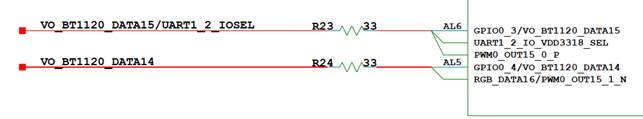
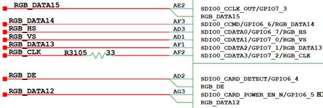
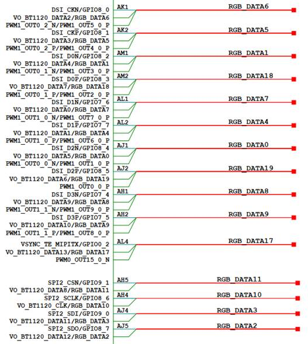
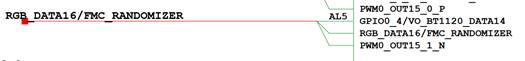
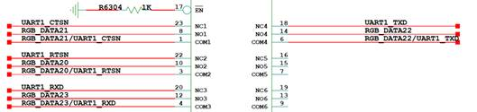

SYS_CONFIG 配置指南
前言
本文为使用MPP媒体处理芯片进行开发的工程师而写，目的是供您在开发过程中查阅媒体处理软件SYS_CONFIG子模块的各种参考信息，包括系统控制、时钟配置、管脚复用等。本文档描述SYS_CONFIG中的各个关键函数的使用方法，以及相关的配置原理。
说明：
本文以SS928V100描述为例，未有特殊说明，SS927V100与SS928V100内容一致。
与本文档相对应的产品版本如下。
本文档（本指南）主要适用于以下工程师：
- 技术支持工程师
- 软件开发工程师
概述
SYS_CONFIG介绍
SYS_CONFIG是进行系统级和板级进行配置的模块，主要作用是在系统加载sys_config.ko时候，对不需要动态修改的初始化环境做配置。包括以下几个部分：
- 初始化
- 系统控制
- 时钟复位配置
- 管脚复用
SYS_CONFIG以二进制文件形式的ko和源码形式同时进行发布，源码位于interdrv/sysconfig目录。
如需修改SYS_CONFIG代码，可以参照以下文档和步骤（以SS928V100为例）：
- 如需修改时钟配置和系统控制，请先参考芯片手册，再修改sysconfig代码。
- 如需修改管脚复用配置，请先参考芯片手册，再修改sysconfig代码。
根据连接的视频输入的sensor不同，系统控制和芯片管脚复用配置存在差异，可以通过模块参数g_sensor_list来进行区分。
比如：
insmod sys_config.ko sensors="sns0=sensor0_xxx,sns1=sensor1_xxx,sns2=sensor2_xxx,sns3=sensor3_xxx" vo_intf="bt1120"
或者
insmod sys_config.ko sensors=sns0=sensor0_xxx,sns1=sensor1_xxx,sns2=sensor2_xxx,sns3=sensor3_xxx vo_intf=bt1120
各模块参数意义如表1所示。
表 1 各模块参数意义
用户可以根据以下实际物理环境，修改SYS_CONFIG模块源代码文件中的相关内容：
- 根据实际系统配置修改相应的系统配置;
- 根据实际系统运行时钟需要修改相应的时钟；
- 根据实际物理电路管脚使用布置情况修改管脚复用的相关内容。
修改完成后，编译和加载模块ko，即可以完成所需新的用户环境的配置。
SYS_CONFIG配置流程如图1所示。

包括以下4个流程：
-
初始化（sysconfig_init）
对配置寄存器的地址进行映射，主要寄存器地址包括CRG、系统控制、MISC、IO管脚复用、GPIO控制、MIPI等。
-
系统控制（sys_ctl）
对系统控制部分进行配置，如对VI和VPSS的在线离线模式QoS设置。
-
时钟复位配置（clk_cfg）
配置VI、VO、SPI、I2C等模块的时钟。
-
管脚复用配置（pin_mux）
根据不同应用场景配置管脚复用为不同的功能。
初始化
SYS_CONFIG的初始化对需要配置的寄存器地址进行ioremap映射，得到软件可以操作配置的虚拟地址。
以下为SYS_CONFIG的初始化进行映射的寄存器地址。
表 1 MSIC寄存器地址
表 2 时钟复位寄存器地址
表 3 管脚复用寄存器地址
表 4 GPIO寄存器地址
表 5 SYS寄存器地址
表 6 DDR寄存器地址
表 7 MIPI_TX寄存器地址
本章节对寄存器地址的映射是其他章节的寄存器配置的基础，在完成本章节寄存器物理地址（即寄存器地址）映射后得到寄存器虚拟地址，通过寄存器虚拟地址可完成对相应寄存器的读写。
操作函数如下：
#define sys_writel(addr, value) ((*((volatile unsigned int *)(addr))) = (value))
#define sys_read(addr) (*((volatile int *)(addr)))
- sys_writel是写函数，addr表示寄存器虚拟地址，value表示写入寄存器的值。
- sys_read是读函数，addr表示寄存器虚拟地址。操作的结果即为读取到的寄存器的值。
系统控制
VI VPSS在线离线模式
根据VI VPSS在线离线模式情况，需要选择VI VPSS在线离线模式。
以下以SS928V100为例说明。
VI VPSS在线离线模式配置
【配置】
g_reg_misc_base 见表1.
static void set_vi_online_video_norm_vpss_online_qos(void)
{
void *misc_base = sys_config_get_reg_misc();
sys_writel(misc_base + 0x1000, 0x44777755);
sys_writel(misc_base + 0x1004, 0x45455066);
sys_writel(misc_base + 0x1008, 0x60050055);
sys_writel(misc_base + 0x100c, 0x45433306);
sys_writel(misc_base + 0x1010, 0x33333366);
sys_writel(misc_base + 0x1014, 0x33503333);
sys_writel(misc_base + 0x1018, 0x00044466);
sys_writel(misc_base + 0x101c, 0x44777765);
sys_writel(misc_base + 0x1020, 0x55556066);
sys_writel(misc_base + 0x1024, 0x60050056);
sys_writel(misc_base + 0x1028, 0x46433306);
sys_writel(misc_base + 0x102c, 0x66555377);
sys_writel(misc_base + 0x1030, 0x33503663);
sys_writel(misc_base + 0x1034, 0x00055577);
}
【描述说明】
MDDRC_QOS_CTRL0为QOS寄存器。
Offset Address: 0x5000 Total Reset Value: 0x0000_0000
配置值为0x44777755：
- Bits[30:28]=0x4，表示DPU写通道QOS配置为4。
- Bits[26:24]=0x4，表示IVE写通道QOS配置为4。
- Bits[22:20]=0x7，表示VPSS写通道QOS配置为7。
- Bits[18:16]=0x7，表示VIPROC_2ND写通道QOS配置为7。
- Bits[14:12]=0x7，表示VIPROC_1ST写通道QOS配置为7。
- Bits[10:8]=0x7，表示VICAP写通道QOS配置为7。
- Bits[6:4]=0x5，表示VDH写通道QOS配置为5。
- Bits[2:0]=0x5，表示VEDU写通道QOS配置为5。
【注意事项】
无。
时钟复位配置
时钟是各模块正常运行的基础，以下以SS928V100为例说明时钟相关配置。
时钟复位配置函数如下（函数具体实现以实际应用场景为准）：
VI 时钟复位配置
VICAP时钟
【配置】
g_reg_crg_base 见表2。
【描述说明】
PERI_CRG9296为VICAP时钟及复位控制寄存器，参考芯片手册。
Offset Address: 0x9140 Total Reset Value: 0x0000_0003
配置值为0x6030：
- Bits[14:12]=0x6，表示时钟配置为600MHz；
- Bits[5:4]=0x3，表示打开VICAP时钟门控。
【注意事项】
工作时钟必须大于SENSOR的时钟。
PORT口时钟
【配置】（以PORT0配置为例）
g_reg_crg_base 见表2。
/* vi port */
sys_writel(g_reg_crg_base + 0x9148, 0xff0);
sys_writel(g_reg_crg_base + 0x9164, 0x7010);
sys_writel(g_reg_crg_base + 0x9184, 0x7010);
sys_writel(g_reg_crg_base + 0x91a4, 0x7010);
sys_writel(g_reg_crg_base + 0x91c4, 0x7010);
【描述说明】
PERI_CRG9305为VICAP PORT0时钟及复位控制寄存器。
Offset Address: 0x9164 Total Reset Value: 0x0000_0000
配置值为0x7010: Bits[14:12]=0x7，表示PORT口时钟配置为600Mhz。
【注意事项】
无。
CMOS时钟
【配置】
g_reg_crg_base 见表2。
【描述说明】
PERI_CRG9304为VI CMOS0时钟复位配置寄存器。
Offset Address: 0x9160 Total Reset Value: 0x0000_0000
配置值为0x0：Bits[20]=0x0，表示VI CMOS时钟相位不取反。
【注意事项】
无。
SENSOR时钟
【配置】（以SENSOR0配置为例）
g_reg_crg_base 见表2。
static void sensor_clock_config(int index, unsigned int clock)
{
int offset = 0x8440;
offset += index * (0x20); /* sensor0 - 3 */
sys_writel(g_reg_crg_base + offset, clock); /* im327 clock: 0x8010 */
}
【描述说明】
sysconfig通过解析模块参数传入的sensor号和sensor名称解析对应的寄存器地址和配置的值，比如模块参数sensors=sns0=sensor0_xxx时，解析出index=0，clock=0x8010，计算的sensor0的offset=0x8440。以SENSOR0时钟复位配置寄存器为例进行详细说明。
PERI_CRG8464为SENSOR0时钟复位配置寄存器。
Offset Address: 0x8440 Total Reset Value: 0x0000_0000
配置值为0x8010：Bits[15:12]=0x8，表示SENSOR0时钟配置为为37MHZ。
【注意事项】
无。
VIPROC时钟
【配置】
g_reg_crg_base 见表2。
【描述说明】
PERI_CRG9680为VIPROC时钟及复位控制寄存器。
Offset Address: 0x9740 Total Reset Value: 0x0000_0000
配置值为0x4010：
- Bits[14:12]=0x4, 表示时钟配置为600MHz；
- Bits[4]=0x1，表示打开VIPROC时钟门控。
【注意事项】
无。
SPI时钟
VO的RGB接口输出，外设LCD显示屏幕使用到了SPI总线，需要使能SPI时钟。
【配置】
g_reg_crg_base参考表2。
static void i2c_spi_clk_cfg(void)
{
void *g_reg_crg_base = sys_config_get_reg_crg();
/* SPI */
sys_writel(g_reg_crg_base + 0x4480, 0x10); /* ssp0 reset&cken */
sys_writel(g_reg_crg_base + 0x4488, 0x10); /* ssp1 reset&cken */
sys_writel(g_reg_crg_base + 0x4490, 0x10); /* ssp2 reset&cken */
sys_writel(g_reg_crg_base + 0x4498, 0x10); /* ssp3 reset&cken */
sys_writel(g_reg_crg_base + 0x44a0, 0x10); /* 3wire spi reset&cken */
}
【描述说明】
PERI_CRG4384是SPI0的时钟门控和复位寄存器。
Offset Address: 0x4480 Total Reset Value: 0x0000_0000
配置值为0x10：
- Bits[0]=0，表示对SPI0撤销复位，
- Bits[4]=1，表示打开SPI0的时钟。
【注意事项】
无。
管脚复用
管脚复用是芯片在有限的输出管脚中，为满足不同场景需要，灵活使用管脚资源，在不同场景中输出管脚呈现不同用途。
I2C总线管脚复用
I2C总线一般用于配置外设芯片，在外设驱动中通常使用I2C接口对外设芯片进行配置。因此需要在SYS_CONFIG 中配置相应的管脚复用为I2C管脚。
I2C管脚复用
【配置】
g_reg_iocfg2_base 见表3。
I2C0:
static void i2c0_pin_mux(void)
{
void *iocfg2_base = sys_config_get_reg_iocfg2();
sys_writel(iocfg2_base + 0x013C, 0x2031);
sys_writel(iocfg2_base + 0x0140, 0x2031);
}
I2C1:
static void i2c1_pin_mux(void)
{
void *iocfg2_base = sys_config_get_reg_iocfg2();
sys_writel(iocfg2_base + 0x00E8, 0x0072);
sys_writel(iocfg2_base + 0x00EC, 0x0072);
}
【描述说明】
以I2C0为例，I2C原理图如图1所示，参考硬件原理图。

I2C0需要I2C0_SCL(时钟)/ I2C0_SDA(数据)2根管脚。以下对2根管脚的管脚复用进行描述。
时钟管脚配置（AM19）
AM19 (寄存器：0x0102F0140)。
表 1 AM19 AM20管脚控制寄存器
管脚存在1种复用情形：I2C0_SCL。
AM19配置值为0x2001：
- Bits[3:0]=0x1，管脚复用为1，管脚复用配置为I2C0_SCL;
- Bits[7:4]=0x0，管脚管脚驱动能力配置为档位4（最大值），档位值越大，对应的驱动能力越大;
- Bits[13]=0x1，输入电平域选择3.3V /5V PAD。
DATA管脚配置（AM20）
AM20 (寄存器：0x0102F013C)。
AM20管脚控制寄存器见表1。
管脚存在2种复用情形：GPIO11_4/I2C0_SDA。
AM20配置值为0x2001：
- Bits[3:0]=0x1，管脚复用为1，管脚复用配置为I2C0_SDA;
- Bits[7:4]=0x0，管脚管脚驱动能力配置为档位4（最大值），档位值越大，对应的驱动能力越大;
- Bits[13]=0x1，输入电平域选择3.3V /5V PAD。
【注意事项】
无。
SPI总线管脚复用
LCD显示屏幕IC芯片通过SPI总线连接到主芯片，在LCD屏幕驱动中通常使用SPI接口对LCD IC芯片进行配置。因此需要配置相应的管脚复用为SPI管脚。
SPI管脚复用
【配置】（以SS928V100为例）
g_reg_iocfg2_base1见表3
static void spi0_pin_mux(void)
{
void *iocfg2_base = sys_config_get_reg_iocfg2();
sys_writel(iocfg2_base + 0x01D8, 0x02b1);
sys_writel(iocfg2_base + 0x01DC, 0x0251);
sys_writel(iocfg2_base + 0x01E0, 0x0201);
sys_writel(iocfg2_base + 0x01E4, 0x0201);
}
【描述说明】
SPI0_SDI（AL33），SPI0_SDO（AL34），SPI0_CSN（AM34），SPI0_SCLK（AK33）管脚如图1所示。

以AK33管脚的复用关系配置为例进行描述，SPI0_SCLK（AK33）管脚控制寄存器如表1所示。
表 1 AK33管脚控制寄存器
AK33管脚存在4种功能复用：GPIO16_3/SPI0_SCLK/I2C2_SCL/SPI_3WIRE_CLK
当前AK33管脚配置值：0x02b1
- Bits [3:0]=1，表示AK33复用为SPI0_SCLK
- Bits[7:4]=0xb，表示驱动能力选择档位12
- Bits[9]=0x1，表示管脚下拉：打开
【注意事项】
无。
VI管脚复用
视频输入是通过BT.656/BT.1120/MIPI接口接收视频数据，按照一定的视频接收协议进行视频数据的采集，并将数据存入指定的内存区域。
以下对VICAP中的存在的管脚复用进行说明。
PORT口管脚复用
MIPI_RX管脚复用
【配置】
g_reg_iocfg2_base 见表3。
以SS928V100的MIPI_RX的PHY0接口为例：
static void mipi0_rx_pin_mux(void)
{
void *iocfg2_base = sys_config_get_reg_iocfg2();
sys_writel(iocfg2_base + 0x01B0, 0x0000);
sys_writel(iocfg2_base + 0x01B4, 0x0000);
sys_writel(iocfg2_base + 0x01C0, 0x0000);
sys_writel(iocfg2_base + 0x01C4, 0x0000);
sys_writel(iocfg2_base + 0x01B8, 0x0000);
sys_writel(iocfg2_base + 0x01BC, 0x0000);
sys_writel(iocfg2_base + 0x01A8, 0x0000);
sys_writel(iocfg2_base + 0x01AC, 0x0000);
sys_writel(iocfg2_base + 0x0198, 0x0000);
sys_writel(iocfg2_base + 0x019C, 0x0000);
sys_writel(iocfg2_base + 0x01A0, 0x0000);
sys_writel(iocfg2_base + 0x01A4, 0x0000);
}
【描述说明】
原理图如图1所示。

当VI视频采集接口为MIPI_RX接口采集时，需要配置图1中对应的10根管脚为对应的MIPI_RX的相关功能，MIPI接口的10根管脚分为1对时钟线和4对DATA数据线，1对管脚为1对差分信号。
- 时钟管脚配置（以AP30复用为MIPI_RX0_CK0P为例说明）。
表 1 AP30管脚控制寄存器
管脚存在2种复用情形：MIPI_RX0_CK0P/GPIO15_0。
配置值为0x0000:Bits[3:0]=0，管脚复用为0，配置复用为MIPI_RX0_CK0P。
- DATA管脚配置（以AN31复用为MIPI_RX0_D0N为例说明）。
表 2 AN31管脚控制寄存器
管脚存在2种复用情形：MIPI_RX0_D0N /GPIO14_3。
配置值为0x0000:
Bits[3:0]=0，管脚复用为0，配置复用为MIPI_RX0_D0P。
其他管脚复用关系配置和以上示例管脚配置情况类似，在此不做详细描述详细描述。
【注意事项】
无。
BT.656管脚复用
【配置】
以设备1的BT.656接口为例。
g_reg_iocfg_base 见表3。
static void vi_bt656_mode_mux(void)
{
void *iocfg2_base = sys_config_get_reg_iocfg2();
sys_writel(iocfg2_base + 0x0158, 0x0206);
sys_writel(iocfg2_base + 0x016C, 0x0006);
sys_writel(iocfg2_base + 0x0178, 0x0006);
sys_writel(iocfg2_base + 0x017C, 0x0006);
sys_writel(iocfg2_base + 0x0174, 0x0006);
sys_writel(iocfg2_base + 0x0160, 0x0206);
sys_writel(iocfg2_base + 0x015C, 0x0206);
sys_writel(iocfg2_base + 0x0164, 0x0206);
sys_writel(iocfg2_base + 0x0154, 0x0206);
}
【描述说明】
原理图如图1所示。

当VI视频采集接口为BT.656接口采集时，需要配置上图中对应的10根管脚为对应的BT.656的相关功能，BT.656接口的10根管脚包含有时钟管脚和8根DATA（VI_DATA0~ VI_DATA7）数据管脚。
- 时钟管脚配置（以AK22复用为VI_CLK为例说明）：
表 1 AK22管脚控制寄存器
管脚存在8种复用情形：HT_SD2/VI_CLK/SENSOR2_HS/SENSOR1_HS/SENSOR0_HS/I2C4_SDA/SPI1_CSN0/GPIO12_3。
配置值为0x0206:Bits[3:0]=0x6，管脚复用为6，配置复用为VI_CLK。
-
DATA管脚配置：
VI_DATA0~VI_DATA7为对应的BT.656接口的相关功能。
以AN24复用为VI_DATA0为例进行说明。
表 2 AK26管脚控制寄存器
管脚存在4种复用情形：HT_DO6/VI_DATA0/GPIO13_0/MIPI_RX1_D0P。配置值为0x0006: Bits[3:0]=0x6，管脚复用为6，配置复用为VI_DATA0。
其他管脚复用关系配置和以上示例管脚配置情况类似，在此不做详细描述。
【注意事项】
无。
BT.1120管脚复用
BT.1120接口由时钟管脚（VI_CLK）和16根数据管脚（VI_DATA0~VI_DATA15）组成。
【配置】
g_reg_iocfg_base 见表3。
static void vi_bt1120_mode_mux(void)
{
void *iocfg2_base = sys_config_get_reg_iocfg2();
sys_writel(iocfg2_base + 0x0158, 0x0206);
sys_writel(iocfg2_base + 0x016C, 0x0006);
sys_writel(iocfg2_base + 0x0178, 0x0006);
sys_writel(iocfg2_base + 0x017C, 0x0006);
sys_writel(iocfg2_base + 0x0174, 0x0006);
sys_writel(iocfg2_base + 0x0160, 0x0206);
sys_writel(iocfg2_base + 0x015C, 0x0206);
sys_writel(iocfg2_base + 0x0164, 0x0206);
sys_writel(iocfg2_base + 0x0154, 0x0206);
sys_writel(iocfg2_base + 0x0194, 0x0006);
sys_writel(iocfg2_base + 0x0190, 0x0006);
sys_writel(iocfg2_base + 0x0184, 0x0006);
sys_writel(iocfg2_base + 0x0180, 0x0006);
sys_writel(iocfg2_base + 0x0188, 0x0006);
sys_writel(iocfg2_base + 0x018C, 0x0006);
sys_writel(iocfg2_base + 0x0170, 0x0006);
sys_writel(iocfg2_base + 0x0168, 0x0006);
}
【描述说明】
原理图如图1所示。

当VI视频采集接口为BT.1120接口采集时,需要配置上图中对应的管脚为对应的BT.1120的相关功能，BT.1120接口的管脚分为时钟管脚和16根DATA（VI_DATA0~ VI_DATA15）管脚。
- 时钟管脚配置（以AK22复用为VI_CLK为例说明）：
表 1 AK22管脚控制寄存器
管脚存在8种复用情形：HT_SD2/VI_CLK/SENSOR2_HS/SENSOR1_HS/SENSOR0_HS/I2C4_SDA/SPI1_CSN0/GPIO12_3。
配置值为0x0206:Bits[3:0]=0x6，管脚复用为6，配置复用为VI_CLK。
-
DATA管脚配置：
VI_DATA0~VI_DATA7为对应的BT.656接口的相关功能，可参考“BT.656管脚复用”章节的相关描述进行配置。
AK26复用为VI_DATA8为例进行说明。
表 2 AK26管脚控制寄存器
管脚存在4种复用情形：HT_CLK_OUT/VI_DATA8/GPIO14_2/MIPI_RX1_D3P。配置值为0x0006: Bits[3:0]=0x6，管脚复用为6，配置复用为VI_DATA8。
其他管脚复用关系配置和以上示例管脚配置情况类似，在此不做详细描述。
【注意事项】
SS928V100只有1个BT.656接口，在配置BT.1120接口时，除了配置BT.656为相关功能外(VI_DATA0~DATA7)，需要另外配置8根管脚为VI_DATA8~DATA15为相关功能。
SENSOR参考时钟管脚
SENSOR管脚用于连接外接SENSOR，主芯片提供参考时钟给SENSOR使用。
【配置】
g_reg_iocfg_base 见表3。
SENSOR0-3:
static void sensor0_pin_mux(void)
{
void *iocfg2_base = sys_config_get_reg_iocfg2();
sys_writel(iocfg2_base + 0x01C8, 0x02d1);
sys_writel(iocfg2_base + 0x01CC, 0x0101);
}
static void sensor1_pin_mux(void)
{
void *iocfg2_base = sys_config_get_reg_iocfg2();
sys_writel(iocfg2_base + 0x0150, 0x02d1);
sys_writel(iocfg2_base + 0x014C, 0x0201);
}
static void sensor2_pin_mux(void)
{
void *iocfg2_base = sys_config_get_reg_iocfg2();
sys_writel(iocfg2_base + 0x01E8, 0x02d4);
sys_writel(iocfg2_base + 0x0160, 0x0205);
}
static void sensor3_pin_mux(void)
{
void *iocfg2_base = sys_config_get_reg_iocfg2();
sys_writel(iocfg2_base + 0x0154, 0x02d2);
}
【描述说明】
SENSOR0_CLK（AL32），SENSOR0_RSTN（AM32）原理图如图1所示。

以AL32管脚的复用关系配置为例进行描述，SENSOR0_CLK（AL32）管脚控制寄存器如表1所示。
表 1 AL32管脚控制寄存器
AL32存在4种功能复用：GPIO15_7/ SENSOR0_CLK/ SENSOR1_CLK/ SENSOR2_CLK
AL32管脚配置：0x02d1
- Bits[3:0]=1，表示AL32复用为SENSOR0_CLK
- Bits[7:4]=d，表示选择驱动能力档位14
- Bits[9]=1，表示管脚下拉控制：打开
【注意事项】
无。
VO管脚复用
HDMI管脚复用
【配置】（以SS928V100为例）
g_reg_iocfg2_base 见表3。
static void hdmi_pin_mux(void)
{
void *iocfg2_base = sys_config_get_reg_iocfg2();
sys_writel(iocfg2_base + 0x00E4, 0x2801);
sys_writel(iocfg2_base + 0x00E8, 0x6801);
sys_writel(iocfg2_base + 0x00EC, 0x6801);
}
【描述说明】
HDMI_HOTPLUG（AK11），HDMI_SDA （AL11），HDMI_SCL（AL12）原理如图1所示。

以AK11管脚的复用关系配置为例进行描述，HDMI_HOTPLUG（AK11）管脚控制寄存器如表1所示。
表 1 AK11管脚控制寄存器
AK11存在两种功能复用：GPIO9_2/ HDMI_HOTPLUG
AK11管脚配置：0x2801
- Bits[3:0]=1，表示AK11复用为HDMI_HOTPLUG
- Bits[7:4]=0，表示选择驱动能力档位1
- Bits[11]=1，表示管脚施密特输入控制：打开
- Bits[13]=1，表示输入电平域值选择3.3V /5V PAD。
【注意事项】
无。
MIPI_TX管脚复用
【配置】（以SS928V100为例）
g_reg_iocfg2_base 见表3。
static void vo_mipi_tx_pin_mux(void)
{
void *iocfg2_base = sys_config_get_reg_iocfg2();
sys_writel(iocfg2_base + 0x00D8, 0x0201);
sys_writel(iocfg2_base + 0x00A0, 0x0000);
sys_writel(iocfg2_base + 0x00A4, 0x0000);
sys_writel(iocfg2_base + 0x00A8, 0x0000);
sys_writel(iocfg2_base + 0x00AC, 0x0000);
sys_writel(iocfg2_base + 0x00B0, 0x0000);
sys_writel(iocfg2_base + 0x00B4, 0x0000);
sys_writel(iocfg2_base + 0x00B8, 0x0000);
sys_writel(iocfg2_base + 0x00BC, 0x0000);
sys_writel(iocfg2_base + 0x00C0, 0x0000);
sys_writel(iocfg2_base + 0x00C4, 0x0000);
}
【描述说明】
参考硬件设计原理图，VSYNC_TE_MIPITX（AL4）、DSI_D3N（AH1）、DSI_D3P（AH2）、DSI_D1N（AL1）、DSI_D1P（AL2）、DSI_CKN（AK1）、DSI_CKP（AK2）、DSI_D0N（AM1）、DSI_D0P（AM2）、DSI_D2N（AJ1）、DSI_D2P（AJ2）管脚如图1所示。

以AL4管脚的复用关系配置为例进行描述，VSYNC_TE_MIPITX（AL4）管脚控制寄存器如表1所示。
表 1 AL4管脚控制寄存器
AL4存在两种功能复用：GPIO0_2/ VSYNC_TE_MIPITX/ VO_BT1120_DATA13/ RGB_DATA17/ PWM0_OUT15_0_N
AL4管脚配置：0x0201
- Bits [3:0]=1，表示AL4复用为VSYNC_TE_MIPITX
- Bits[7:4]=0，表示选择档位1
- Bits[9]=0，表示管脚下拉控制：打开
【注意事项】
除VSYNC_TE_MIPITX 管脚外，其他MIPI_TX管脚的驱动能力由MIPI_TX控制PHY寄存器0x68来配置，当前采用寄存器默认值0x05。
BT.1120管脚复用
【配置】（以SS928V100为例）
g_reg_iocfg2_base 见表3，g_reg_mipi_tx_base见表7。
static void vo_bt_pin_mux(int vo_bt_mode)
{
void *iocfg2_base = sys_config_get_reg_iocfg2();
vo_cmos_set_pin_drive_cap(MIPI_TX_DRIVE_CAP_LEVEL3);
sys_writel(iocfg2_base + 0x00C8, 0x0682);
sys_writel(iocfg2_base + 0x00A8, 0x2);
sys_writel(iocfg2_base + 0x00AC, 0x2);
sys_writel(iocfg2_base + 0x00B0, 0x2);
sys_writel(iocfg2_base + 0x00B4, 0x2);
sys_writel(iocfg2_base + 0x00B8, 0x2);
sys_writel(iocfg2_base + 0x00C0, 0x2);
sys_writel(iocfg2_base + 0x00C4, 0x2);
sys_writel(iocfg2_base + 0x00BC, 0x2);
if (vo_bt_mode == VO_BT656_MODE) {
return;
}
sys_writel(iocfg2_base + 0x00D4, 0x0242);
sys_writel(iocfg2_base + 0x00A0, 0x2);
sys_writel(iocfg2_base + 0x00A4, 0x2);
sys_writel(iocfg2_base + 0x00D0, 0x0242);
sys_writel(iocfg2_base + 0x00CC, 0x0242);
sys_writel(iocfg2_base + 0x00D8, 0x0242);
sys_writel(iocfg2_base + 0x00E0, 0x0242);
sys_writel(iocfg2_base + 0x00DC, 0x0242);
}
【描述说明】
参考实际硬件设计原理图，VO_BT1120_CLK、VO_BT1120_DATA0、VO_BT1120_DATA1、……、VO_BT1120_DATA15通过AH4、AL1、AL2、……、AL6进行输出，BT.1120相关管脚如图1所示（以实际原理图为准）。


以AH4、AL1管脚的复用关系配置为例进行描述，VO_BT1120_CLK（AH4），VO_BT1120_DATA0（AL1）管脚控制寄存器如表1所示。
表 1 AH4, AL1管脚控制寄存器
-
AH4存在4种功能复用：GPIO8_6/SPI2_SCLK/VO_BT1120_CLK/RGB_DATA10
AH4管脚配置：0x06f2
- Bits [3:0]=2，表示AH4复用为VO_BT1120_CLK
- Bits[7:4]=0xf，表示选择档位16
- Bits[9]=0x1，表示管脚下拉打开
- Bits[10]=0x1，表示管脚电平转换速率：慢沿输出。
-
AL1存在6种功能复用：DSI_D1N/GPIO7_6/VO_BT1120_DATA0/RGB_DATA7/PWM1_OUT1_0_N/PWM1_OUT7_0_P
AL1管脚配置：0x0002
Bits [3:0]=2，表示AL1复用为VO_BT1120_DATA0
【注意事项】
DATA0~DATA7，DATA9，DATA10引脚的管脚驱动能力由MIPI_TX控制器来配置，可使用的档位0~3，驱动能力大小关系：档位0<档位1<档位2<档位3，默认档位3，PHY的写入和读取方法如下：
写入配置方法：
PHY_REG_CFG1 = 0x100XX（XX为PHY的寄存器地址）
PHY_REG_CFG0 = 0x2
PHY_REG_CFG0 = 0x0
PHY_REG_CFG1 = 0xYY（YY为PHY的寄存器XX的配置值）
PHY_REG_CFG0 = 0x2
PHY_REG_CFG0 = 0x0
写入示例：
static void vo_mipi_tx_enable(void)
{
void *crg_base = sys_config_get_reg_crg();
unsigned long addr = (unsigned long)(crg_base + 0x8140);
/* mipi_tx gate clk enable */
write_reg32(addr, 1, 0x1); /* bit 0 */
/* unreset */
write_reg32(addr, 0 << 1, 0x1 << 1); /* 1: bit 1 */
/* select ref clk 27MHz */
write_reg32(addr, 1 << 2, 0x3 << 2); /* 2: bit 2 */
}
static inline void set_phy_reg_isb(void)
{
isb();
#ifdef CONFIG_64BIT
dsb(sy);
#else
dsb();
#endif
#ifdef CONFIG_64BIT
dmb(sy);
#else
dmb();
#endif
}
static void set_phy_reg(unsigned int addr, unsigned char value)
{
void *mipi_tx_base = sys_config_get_reg_mipi_tx();
set_phy_reg_isb();
sys_writel(mipi_tx_base + 0xb8, 0x10000 + addr);
set_phy_reg_isb();
sys_writel(mipi_tx_base + 0xb4, 0x2);
set_phy_reg_isb();
sys_writel(mipi_tx_base + 0xb4, 0x0);
set_phy_reg_isb();
sys_writel(mipi_tx_base + 0xb8, value);
set_phy_reg_isb();
sys_writel(mipi_tx_base + 0xb4, 0x2);
set_phy_reg_isb();
sys_writel(mipi_tx_base + 0xb4, 0x0);
set_phy_reg_isb();
}
static void vo_cmos_set_pin_drive_cap(mipi_tx_drive_cap cap)
{
vo_mipi_tx_enable();
switch (cap) {
case MIPI_TX_DRIVE_CAP_LEVEL0:
set_phy_reg(MIPI_TX_DRIVE_CAP_PHY_REG, MIPI_TX_DRIVE_CAP_LEVEL0_VALUE);
break;
case MIPI_TX_DRIVE_CAP_LEVEL1:
set_phy_reg(MIPI_TX_DRIVE_CAP_PHY_REG, MIPI_TX_DRIVE_CAP_LEVEL1_VALUE);
break;
case MIPI_TX_DRIVE_CAP_LEVEL2:
set_phy_reg(MIPI_TX_DRIVE_CAP_PHY_REG, MIPI_TX_DRIVE_CAP_LEVEL2_VALUE);
break;
case MIPI_TX_DRIVE_CAP_LEVEL3:
set_phy_reg(MIPI_TX_DRIVE_CAP_PHY_REG, MIPI_TX_DRIVE_CAP_LEVEL3_VALUE);
break;
default:
break;
}
}
static void vo_bt_pin_mux(int vo_bt_mode)
{
……
/* some bt pins' drv cap set by mipi_tx controller */
vo_cmos_set_pin_drive_cap(MIPI_TX_DRIVE_CAP_LEVEL3);
……
}
读取配置方法：读配置即读MIPI_TX PHY的寄存器时，对PHY_REG_CFG1(g_reg_mipi_tx_base+0x00b8)和PHY_REG_CFG0(g_reg_mipi_tx_base+0x00b4)寄存器执行下面的配置后，读 PHY_REG_CFG1寄存器的值，该寄存器的 bit15~bit8 即是 PHY XX 寄存器的值。
读取示例：
bspmm g_reg_mipi_tx_base+0x00b8 0x10066
bspmm g_reg_mipi_tx_base+0x00b4 0x2
bspmm g_reg_mipi_tx_base+0x00b4 0x0
bspmd.l g_reg_mipi_tx_base+0x00b8
BT.656管脚复用
【配置示例】（以SS928V100为例）
g_reg_iocfg_base2 见表3。
static void vo_bt_pin_mux(int vo_bt_mode)
{
void *iocfg2_base = sys_config_get_reg_iocfg2();
vo_cmos_set_pin_drive_cap(MIPI_TX_DRIVE_CAP_LEVEL3);
sys_writel(iocfg2_base + 0x00C8, 0x0682);
sys_writel(iocfg2_base + 0x00A8, 0x2);
sys_writel(iocfg2_base + 0x00AC, 0x2);
sys_writel(iocfg2_base + 0x00B0, 0x2);
sys_writel(iocfg2_base + 0x00B4, 0x2);
sys_writel(iocfg2_base + 0x00B8, 0x2);
sys_writel(iocfg2_base + 0x00C0, 0x2);
sys_writel(iocfg2_base + 0x00C4, 0x2);
sys_writel(iocfg2_base + 0x00BC, 0x2);
if (vo_bt_mode == VO_BT656_MODE) {
return;
}
}
【描述说明】
参考实际硬件设计原理图，VO_BT656_CLK、VO_BT656_DATA0、VO_BT656_DATA1、……、VO_BT656_DATA7通过AH4、AL1、AL2、……、AM2进行输出，BT.656相关管脚图1所示。

【注意事项】
VO BT.656接口功能管脚采用VO BT.1120接口的DATA0~DATA7，这些管脚的驱动能力由MIPI_TX控制寄存器来配置，方法可参考“BT.1120管脚复用”小节，默认配置为档位3。
RGB管脚复用
【配置】（以SS928V100为例）
g_reg_iocfg2_base 见表3。
static void vo_rgb_pin_mux(int vo_rgb_mode)
{
void *iocfg2_base = sys_config_get_reg_iocfg2();
vo_cmos_set_pin_drive_cap(MIPI_TX_DRIVE_CAP_LEVEL2);
sys_writel(iocfg2_base + 0x0098, 0x0223);
sys_writel(iocfg2_base + 0x0080, 0x0213);
sys_writel(iocfg2_base + 0x008C, 0x0213);
sys_writel(iocfg2_base + 0x0090, 0x0213);
sys_writel(iocfg2_base + 0x00C0, 0x3);
sys_writel(iocfg2_base + 0x00B8, 0x3);
sys_writel(iocfg2_base + 0x00CC, 0x0233);
sys_writel(iocfg2_base + 0x00D0, 0x0233);
sys_writel(iocfg2_base + 0x00AC, 0x3);
sys_writel(iocfg2_base + 0x00B4, 0x3);
if (vo_rgb_mode == VO_RGB_6BIT_MODE) {
return;
}
sys_writel(iocfg2_base + 0x00B0, 0x3);
sys_writel(iocfg2_base + 0x00A8, 0x3);
if (vo_rgb_mode == VO_RGB_8BIT_MODE) {
return;
}
sys_writel(iocfg2_base + 0x00A0, 0x3);
sys_writel(iocfg2_base + 0x00A4, 0x3);
sys_writel(iocfg2_base + 0x00C8, 0x0233);
sys_writel(iocfg2_base + 0x00D4, 0x0233);
sys_writel(iocfg2_base + 0x0084, 0x0213);
sys_writel(iocfg2_base + 0x0094, 0x0213);
sys_writel(iocfg2_base + 0x0088, 0x0213);
sys_writel(iocfg2_base + 0x009C, 0x0213);
if (vo_rgb_mode == VO_RGB_16BIT_MODE) {
return;
}
sys_writel(iocfg2_base + 0x00E0, 0x0233);
sys_writel(iocfg2_base + 0x00D8, 0x0233);
if (vo_rgb_mode == VO_RGB_18BIT_MODE) {
return;
}
sys_writel(iocfg2_base + 0x00BC, 0x3);
sys_writel(iocfg2_base + 0x00C4, 0x3);
sys_writel(iocfg2_base + 0x0068, 0x0203);
sys_writel(iocfg2_base + 0x006C, 0x0203);
sys_writel(iocfg2_base + 0x0064, 0x0203);
sys_writel(iocfg2_base + 0x0060, 0x0213);
}
【描述说明】
参考实际硬件设计原理图，RGB_CLK、RGB_DE、RGB_HS、RGB_VS、RGB _DATA0、RGB _DATA1、……、RGB _DATA23通过AF2、AD2、AD3、AD1、AJ1、AM1、……、AD4进行输出，RGB接口管脚如图1至图4所示。
图 1 RGB_CLK、RGB_DE、RGB_HS、RGB_VS、RGB_DATA12、RGB_DATA13、RGB_DATA14、RGB_DATA15

图 2 RGB_DATA0、RGB_DATA1、RGB_DATA2、RGB_DATA3、RGB_DATA4、RGB_DATA5、RGB_DATA6、RGB_DATA7、RGB_DATA8、RGB_DATA9、RGB_DATA10、RGB_DATA11、RGB_DATA17、RGB_DATA18、RGB_DATA19


图 4 RGB_DATA20、RGB_DATA21、RGB_DATA22、RGB_DATA23

以AF2、AJ1管脚的复用关系配置为例进行描述，RGB_CLK（AF2），RGB_DATA0（AJ1）管脚控制寄存器如表1所示。
表 1 AF2, AJ1管脚控制寄存器
-
AF2存在4种功能复用：GPIO7_2/SDIO0_CDATA3/RGB_CLK
AF2管脚配置：0x02d3
- Bits [3:0]=3，表示AF2复用为RGB_CLK
- Bits[7:4]=0xd，表示驱动能力选择档位14
- Bits[9]=0x1，表示管脚下拉：打开。
-
AJ1存在6种功能复用：DSI_D2N/GPIO8_4/VO_BT1120_DATA5/RGB_DATA0/PWM1_OUT0_0_N/PWM1_OUT1_0_P
AJ1管脚配置：0x0003
- Bits [3:0]=3，表示AJ1复用为RGB_DATA0
- Bits[7:4]=0，表示驱动能力选择档位1
【注意事项】
RGB_DATA0、RGB_DATA1、RGB_DATA4、RGB_DATA5、RGB_DATA6、RGB_DATA7 RGB_DATA8、RGB_DATA9、RGB_DATA18、RGB_DATA19这些管脚的驱动能力由MIPI_TX控制寄存器来配置，方法可参考“BT.1120管脚复用”小节，默认配置为档位2。
Audio管脚复用
AIAO模块对接外置CODEC时，需要使能I2S相关的管脚复用。AIAO模块对接内置CODEC时，需要使能功放芯片的GPIO管脚复用，用于解除静音。
I2S管脚复用
【配置】（以SS928V100的I2S为例）
static void i2s_pin_mux(void)
{
void * iocfg2_base = get_reg_iocfg2();
sys_writel(iocfg2_base + 0x010C, 0x0232); /* I2S_BCLK */
sys_writel(iocfg2_base + 0x0108, 0x0152); /* I2S_WS */
sys_writel(iocfg2_base + 0x0100, 0x0202); /* I2S_SD_RX */
sys_writel(iocfg2_base + 0x0104, 0x0252); /* I2S_SD_TX */
sys_writel(iocfg2_base + 0x0110, 0x0142); /* I2S_MCLK */
}
【描述说明】
I2S原理图如图1所示。

以I2S_MCLK为例，对应芯片管脚编号为AK15 (寄存器：0x0102F0110)。
表 1 AK15管脚控制寄存器
管脚存在5种复用情形：JTAG_TDI / GPIO10_5 / I2S_MCLK / SPI3_SCLK / PWM0_OUT10_0_P。
AK15配置值为0x000001C2：
- Bits[3:0]=0x2表示管脚功能选择为I2S_MCLK；
- Bits[7:4]=0xC表示管脚驱动能力配置为档位13，档位值越大，对应的驱动能力越大；
- Bits[9:8]=0x1表示管脚上拉控制打开, 下拉控制关闭，结合实际电路配置；
- Bits[10]=0x0表示电平转换速率为快沿输出。
【注意事项】
无。
功放GPIO管脚复用
【配置】（以SS928V100为例）
static void amp_unmute_pin_mux(void)
{
void * iocfg2_base = get_reg_iocfg2();
void * gpio_base = get_reg_gpio();
/* GPIO10_0 */
sys_writel(iocfg2_base + 0x00FC, 0x0201);
/* output high */
sys_writel(gpio_base + 0xA400, 0x01);
sys_writel(gpio_base + 0xA004, 0x01);
}
【描述说明】
功放芯片的使能通过GPIO10_0管脚进行控制，原理图如图1所示。

功放芯片使能控制的具体配置为：
- GPIO10_0管脚对应芯片管脚编号为AP17 (寄存器：0x0102F00FC)。
表 1 AP17管脚控制寄存器
管脚存在3种复用情形：LSADC_CH3 / GPIO10_0 / PCIE_RST_N。
AP17配置值为0x00000201：
- Bits[3:0]=0x1表示管脚功能选择为GPIO10_0；
- Bits[7:4]=0x0表示管脚驱动能力配置为档位1，档位值越大，对应的驱动能力越大；
- Bits[9:8]=0x2表示管脚上拉控制关闭, 下拉控制打开，结合实际电路配置；
- Bits[10]=0x0表示电平转换速率为快沿输出。
GPIO_DIR为GPIO方向控制寄存器，配置寄存器0x1109A400的Bits [7:0]为0x01，表示配置GPIO10_0为输出方向。
Offset Address: 400 Total Reset Value: 0x00
GPIO_DATA为GPIO数据寄存器，配置寄存器0x1109A004的Bits [7:0]为0x01，表示配置GPIO10_0为输出高电平。
Offset Address: 0x000～0x3FC Total Reset Value: 0x00
当GPIO配置为输入模式时，为GPIO输入数据；当GPIO配置为输出模式时，为输出数据。各比特均可独立控制。与GPIO_DIR配合使用。 |
【注意事项】
无。
其他
无。